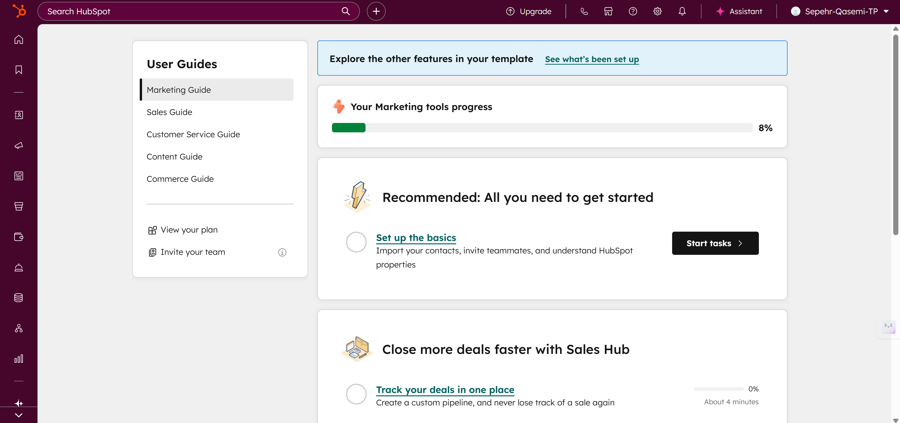
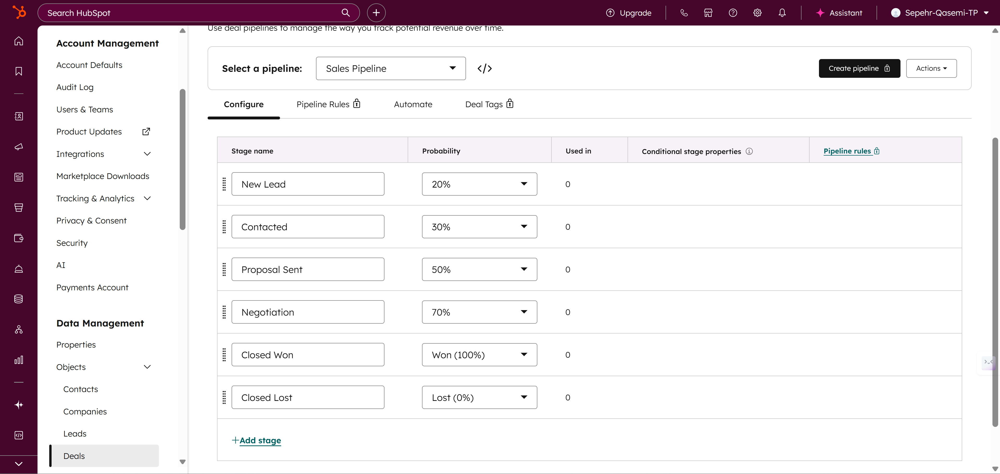
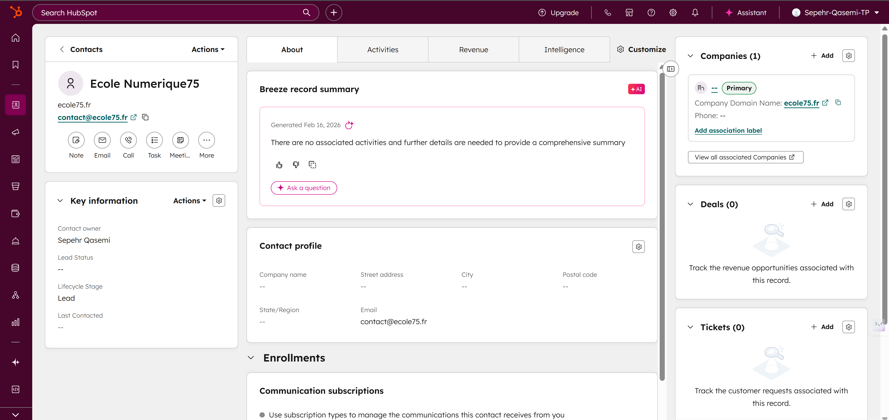
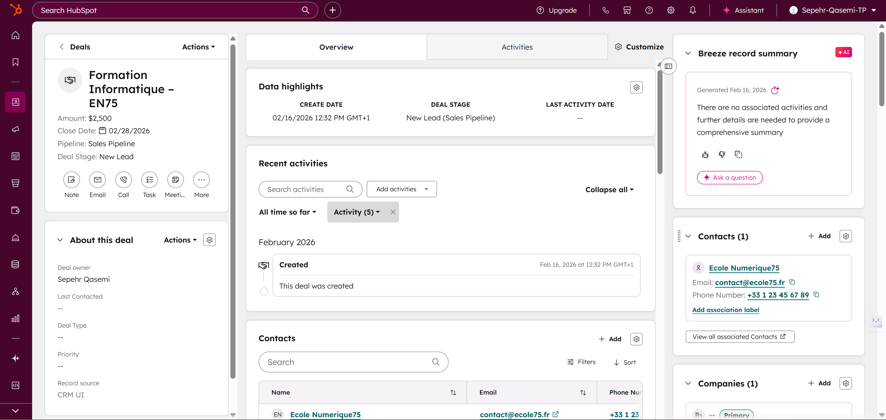
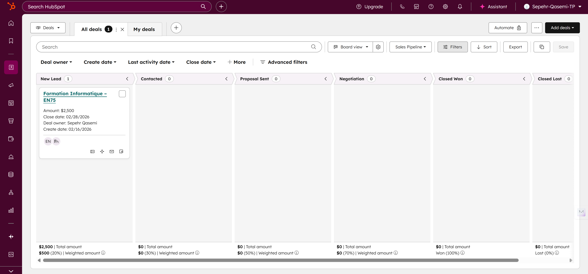
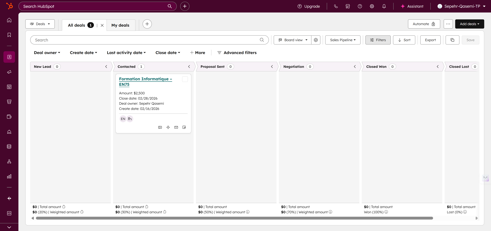
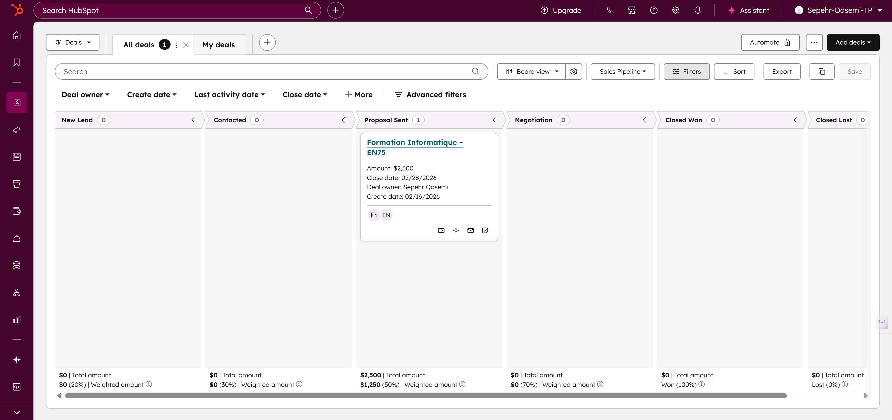
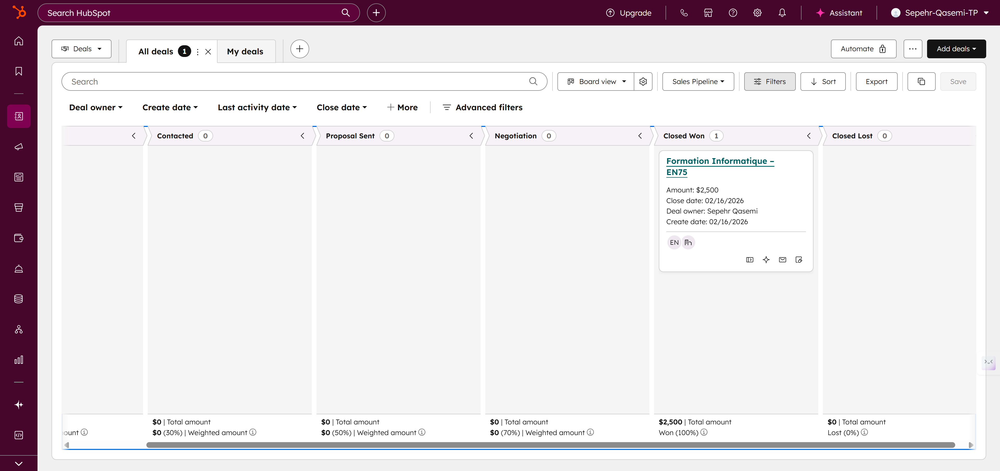
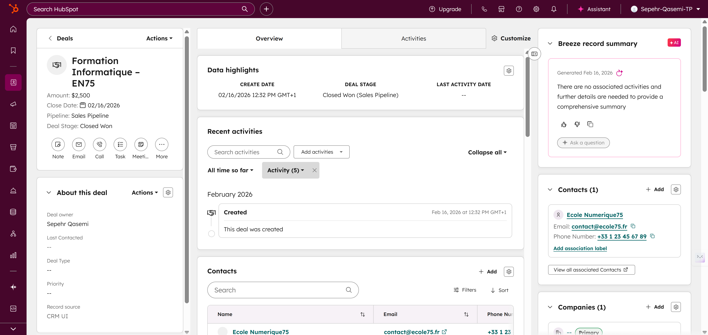

HubSpot Discovery Assignment
Screenshots and synthesis of the practical work completed on HubSpot.
Screenshots
9 screenshots in order








Analysis
Short synthesisThis assignment highlights CRM configuration logic and stage consistency, from contact creation to pipeline operation. It demonstrates how rigorous setup improves reliability in commercial follow-up.